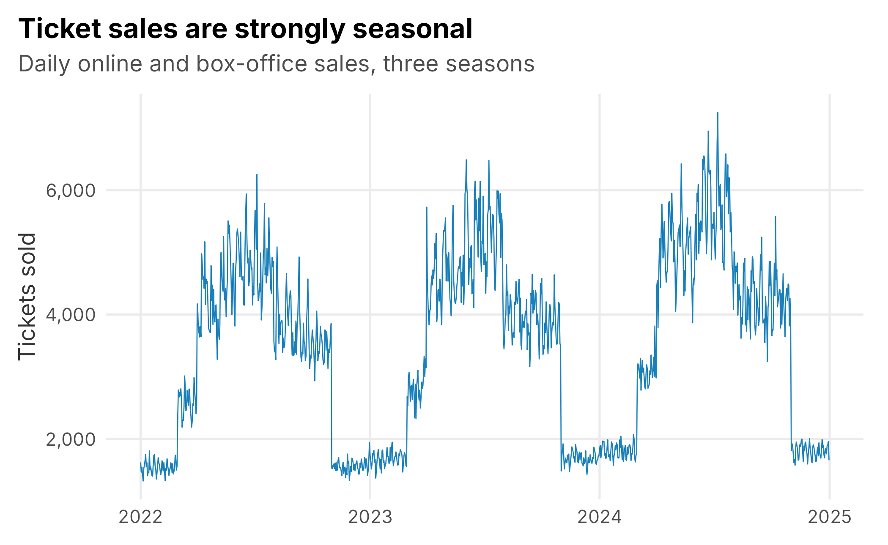
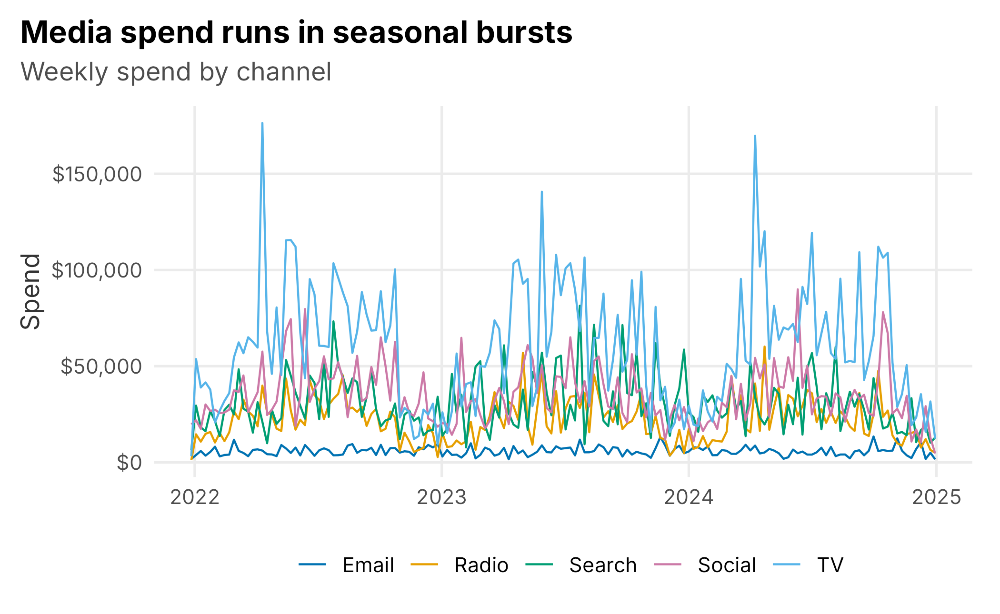
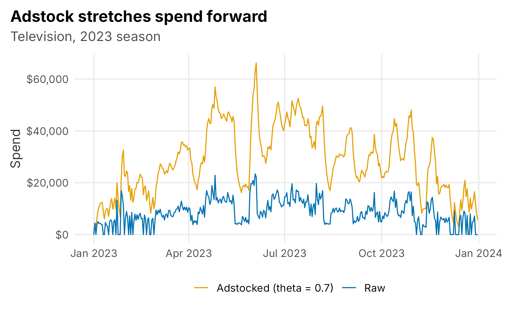
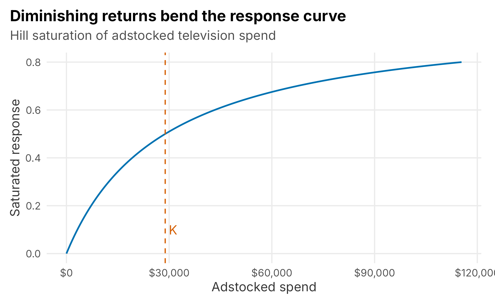
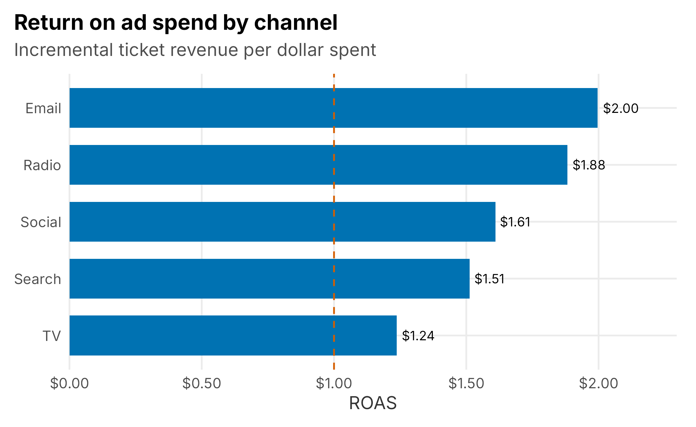
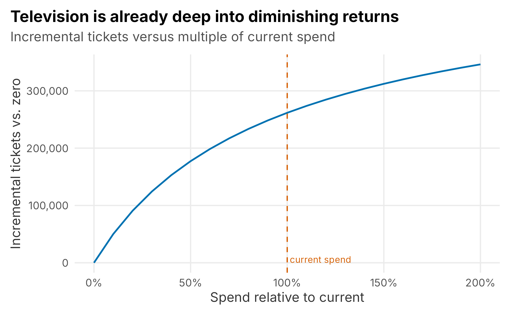
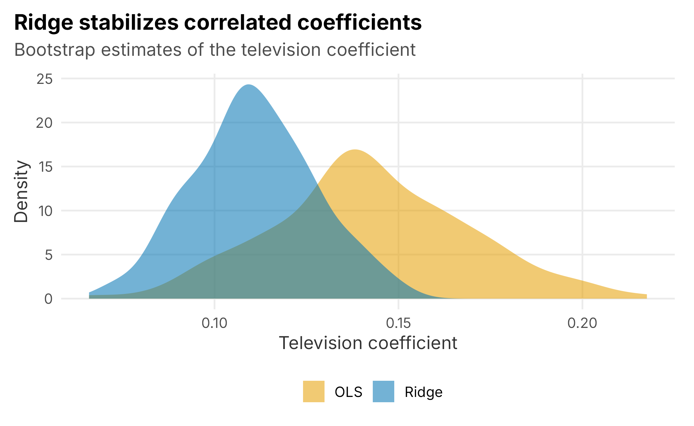

9 Marketing mix modeling
The last chapter ended on an uncomfortable note. Promotions, and marketing in general, are hard to attribute: sales happen for many reasons at once, and the marketing that ran alongside them takes credit it may not deserve. A famous line, usually pinned on the retailer John Wanamaker, captures the frustration:
“Half the money I spend on advertising is wasted; the trouble is I don’t know which half.”
Marketing mix modeling — MMM for short — is one disciplined answer to that question. Instead of trying to follow each individual customer from an ad to a purchase, it steps back and looks at the whole business from the top down. You line up what you spent on each marketing channel, day by day, next to what you sold, and you use a regression to estimate how much each channel contributed and what it returned. It is the same basic tool as the pricing regression in Chapter 6, pointed at a different question.
MMM has become popular again for a practical reason: the bottom-up, cookie-based attribution that dominated digital marketing for a decade is breaking down as privacy rules tighten and tracking gets harder. MMM never needed to follow individuals. It works from aggregate spend and aggregate outcomes, which makes it durable. It is not magic — it is correlational, it needs your spending to actually vary, and it can mislead you if you are careless. But used with judgment it answers the two questions a marketing director actually has: what is our marketing doing, and where should the next dollar go?
This chapter builds a small MMM end to end on a simulated season of spending. Because we built the data, we know the true answer, so at each step we can check whether the model recovers it — and, just as usefully, see where it cannot.
9.1 What a marketing mix model is
At its core an MMM is a regression:
\[\begin{equation} \text{sales}_t = \text{baseline}_t + \sum_{c}\, \beta_c \cdot f(\text{spend}_{c,t}) + \varepsilon_t \tag{9.1} \end{equation}\]
Daily sales are explained by a baseline — the demand you would have had anyway, driven by the season, the day of week, and whether there is a home game — plus a contribution from each marketing channel \(c\), plus noise. Three ideas separate a real MMM from a naive “regress sales on spend”:
- Carryover (adstock). Advertising you run today keeps working for days or weeks. A television campaign does not stop mattering the moment it airs.
- Diminishing returns (saturation). The first dollar into a channel does more than the millionth. Response curves bend.
- Controlling for the baseline. Most of the day-to-day movement in ticket sales has nothing to do with marketing. If you do not account for the season and the schedule, the model will hand marketing credit that belongs to a July weekend.
We will add these one at a time. The honest framing up front: an MMM tells you about association, not proof. It is strongest as a strategic, budget-level guide and weakest as a precise per-campaign scorecard. It complements experiments and attribution rather than replacing them.
9.2 The data
The marketing_mix_data set in the FOSBAAS package is three seasons of daily records for our club: tickets sold, ticket revenue, and the raw dollars spent that day on five channels — television, radio, paid social, paid search, and email — together with a few calendar fields.
mmm <- FOSBAAS::marketing_mix_data
kable(head(mmm[, c("date","ticketSales","spendTv","spendRadio",
"spendSocial","spendSearch","spendEmail","seasonPhase")]),
caption = "The first days of the marketing-mix data set.",
align = "c", format = "markdown", padding = 0)| date | ticketSales | spendTv | spendRadio | spendSocial | spendSearch | spendEmail | seasonPhase |
|---|---|---|---|---|---|---|---|
| 2022-01-01 | 1622 | 3200 | 1146 | 9071 | 3340 | 926 | offseason |
| 2022-01-02 | 1464 | 0 | 0 | 10731 | 3113 | 841 | offseason |
| 2022-01-03 | 1541 | 7136 | 1858 | 3295 | 4347 | 495 | offseason |
| 2022-01-04 | 1427 | 9002 | 2106 | 3281 | 4683 | 555 | offseason |
| 2022-01-05 | 1321 | 6199 | 1511 | 2712 | 3936 | 579 | offseason |
| 2022-01-06 | 1525 | 7651 | 2332 | 3293 | 4403 | 536 | offseason |
Sales follow the shape you would expect: quiet in the winter, rising through spring training and the early season, peaking in the summer, and tailing off (Figure 9.1).

Figure 9.1: Daily ticket sales across three simulated seasons. Marketing has to be measured against this strong seasonal baseline.
Spend is seasonal too — the club leans in when demand is there — and the channels are run in campaigns, so they move in bursts (Figure 9.2).

Figure 9.2: Weekly spend by channel. Television is the largest line; email is a small, steady, always-on channel.
Before modeling anything, it is tempting to just correlate spend with sales. Doing so is a good way to see why we need more than correlation.
raw_cor <- sapply(mmm[, channels], function(x) cor(x, mmm$ticketSales))
tv_radio <- cor(mmm$spendTv, mmm$spendRadio)
kable(data.frame(channel = channel_lab,
`cor with sales` = round(raw_cor, 2),
check.names = FALSE),
caption = "Raw correlation of each channel's spend with ticket sales.",
align = "c", format = "markdown", padding = 0, row.names = FALSE)| channel | cor with sales |
|---|---|
| TV | 0.62 |
| Radio | 0.56 |
| Social | 0.47 |
| Search | 0.27 |
| 0.00 |
Two traps are already visible. First, email’s raw correlation with sales is about zero, even though email genuinely drives sales in this data — it is an always-on channel that does not track the seasonal demand cycle, so the simple correlation misses it entirely. Second, television and radio spend correlate with each other at 0.71, because they run in the same campaigns. That will make it hard to tell their effects apart, a problem we return to later.
9.3 Adstock: advertising carryover
Advertising has a memory. A television flight this week still nudges sales next week, fading over time. The standard way to model that is geometric adstock: each day’s effective advertising is today’s spend plus a decaying fraction of yesterday’s effective advertising.
\[\begin{equation} A_t = \text{spend}_t + \theta \, A_{t-1} \tag{9.2} \end{equation}\]
The decay rate \(\theta\) controls how long advertising lingers. A rate near zero means an ad is spent the day it runs; a rate near one means it echoes for weeks. The transform is a three-line function:
adstock <- function(x, rate) {
out <- numeric(length(x)); out[1] <- x[1]
for (i in 2:length(x)) out[i] <- x[i] + rate * out[i - 1]
out
}Applied to television spend, adstock smooths the spiky raw series into something that better resembles how the advertising actually works on demand (Figure 9.3).

Figure 9.3: Raw versus adstocked television spend over one season. Carryover spreads each burst forward in time.
How do you choose the decay rate? This is where beginners get burned. A natural idea is to try many rates and keep the one whose adstocked series correlates most strongly with sales. Try it, and every channel comes back with a rate near the maximum:
rates <- seq(0, 0.9, by = 0.05)
y <- log(mmm$ticketSales)
naive_rate <- sapply(channels, function(ch)
rates[which.max(sapply(rates, function(r) cor(adstock(mmm[[ch]], r), y)))])The reason is subtle: a high decay rate smooths the spend series into a slow seasonal wave, and anything smooth correlates with the smooth seasonal sales curve. The grid is not measuring carryover; it is measuring smoothness. A better approach first removes the predictable baseline — season, day of week, home games — and looks at what carryover explains in the leftover:
baseline <- lm(log(ticketSales) ~ dayOfWeek + seasonPhase + isGameDay +
I(as.numeric(date - min(date))/365), data = mmm)
resid_y <- residuals(baseline)
resid_rate <- sapply(channels, function(ch)
rates[which.max(sapply(rates, function(r) {
a <- adstock(mmm[[ch]], r); cor(saturate(a, mean(a)), resid_y) }))])
truth_theta <- c(spendTv = 0.70, spendRadio = 0.50, spendSocial = 0.30,
spendSearch = 0.10, spendEmail = 0.20)
kable(data.frame(channel = channel_lab,
`naive grid` = naive_rate,
`residualized` = resid_rate,
`true rate` = truth_theta, check.names = FALSE),
caption = "Estimated adstock decay rates. The naive grid pins everything at 0.9; residualizing helps but is still noisy.",
align = "c", format = "markdown", padding = 0, row.names = FALSE)| channel | naive grid | residualized | true rate |
|---|---|---|---|
| TV | 0.9 | 0.55 | 0.7 |
| Radio | 0.9 | 0.50 | 0.5 |
| Social | 0.9 | 0.50 | 0.3 |
| Search | 0.9 | 0.75 | 0.1 |
| 0.9 | 0.75 | 0.2 |
Residualizing is much better — it recovers television’s long carryover and radio’s medium carryover — but it is still noisy and gets search and email wrong. This is the honest lesson: adstock rates are only weakly identified from observational data. In practice you set them from domain knowledge and priors — television and brand campaigns linger, search is nearly immediate — and then test how sensitive your conclusions are to the choice. Because we built this data we happen to know the true rates, so for the rest of the chapter we use them and move on.
carry <- truth_theta
ad <- as.data.frame(mapply(function(ch, r) adstock(mmm[[ch]], r), channels, carry))
names(ad) <- channels9.4 Saturation: diminishing returns
The second transform captures the fact that channels wear out. Pouring more into a channel keeps adding sales, but each extra dollar adds less than the one before. A simple, well-behaved way to bend the response is the Hill curve with a half-saturation point \(K\) — the spend level at which the channel reaches half of its maximum effect.
\[\begin{equation} S(x) = \frac{x}{x + K} \tag{9.3} \end{equation}\]
Below \(K\) the channel is in its efficient range; well above it, extra spend barely moves the needle (Figure 9.4).

Figure 9.4: A saturation curve. Response rises steeply at first, then flattens; K marks the half-saturation point.
Like the decay rate, \(K\) is hard to pin down precisely from the data, and production models tune it by cross-validation. A robust, simple default is to set each channel’s half-saturation point at its own typical (mean) level of adstocked spend, so the channel sits in the responsive part of its curve. We use that here.
half <- sapply(ad, mean)
sat <- as.data.frame(mapply(function(ch) saturate(ad[[ch]], half[[ch]]), channels))
names(sat) <- channels9.5 Fitting the model
Now we assemble the regression: log daily sales on the transformed channels plus the baseline controls. Modeling sales in logs makes each channel’s effect a multiplicative lift, which is what “diminishing returns on a percentage basis” implies, and keeps predictions positive.
model_df <- data.frame(
logSales = log(mmm$ticketSales),
sat,
dayOfWeek = mmm$dayOfWeek,
seasonPhase = mmm$seasonPhase,
isGameDay = mmm$isGameDay,
trend = as.numeric(mmm$date - min(mmm$date)) / 365)
fit <- lm(logSales ~ ., data = model_df)Before reading the marketing coefficients, notice how much work the baseline does. A model with only the calendar controls already explains about 98% of the day-to-day variation in log sales; adding all five marketing channels lifts that to 98.7%. That is not a sign marketing does not matter — it is a reminder that marketing is a modest slice of the variance even when it drives a meaningful slice of the sales. It also explains why you must model the baseline carefully: get it wrong and marketing will absorb the difference.
The estimated channel coefficients are the maximum log-lift each channel can add. Because this is simulated data, we can lay them next to the truth:
| channel | estimate | truth |
|---|---|---|
| TV | 0.140 | 0.16 |
| Radio | 0.077 | 0.09 |
| Social | 0.107 | 0.14 |
| Search | 0.090 | 0.11 |
| 0.023 | 0.06 |
Every channel comes back positive and in roughly the right order — television and social carry the largest per-unit effects. The estimates are pulled toward each other and are not perfect, especially email, which the model understates because email is always-on and barely correlates with the demand cycle. That difficulty is real and worth remembering: the channels that are hardest to measure are often the owned, steady ones.
9.6 From coefficients to ROI
Coefficients are not what a marketing director wants. They want to know how many tickets each channel drove and what it returned per dollar. We get there by decomposition: predict sales with the model, then predict again with one channel turned off, and attribute the difference to that channel. Divided by what we spent, that difference becomes a return on ad spend (ROAS).
price <- mean(mmm$ticketRevenue / mmm$ticketSales)
pred <- predict(fit)
roas <- lapply(channels, function(ch) {
z <- sat; z[[ch]] <- 0
off <- predict(fit, newdata = data.frame(z,
dayOfWeek = mmm$dayOfWeek, seasonPhase = mmm$seasonPhase,
isGameDay = mmm$isGameDay, trend = model_df$trend))
incr <- sum(exp(pred) - exp(off))
data.frame(channel = channel_lab[ch], tickets = incr,
spend = sum(mmm[[ch]]),
roas = incr * price / sum(mmm[[ch]]),
share = incr / sum(exp(pred)))
}) |> bind_rows()| channel | incremental tickets | spend | ROAS | share of sales |
|---|---|---|---|---|
| TV | 261,699 | $9,497,920 | $1.24 | 6.9% |
| Radio | 144,903 | $3,454,795 | $1.88 | 3.8% |
| Social | 197,844 | $5,515,079 | $1.61 | 5.2% |
| Search | 162,282 | $4,813,554 | $1.51 | 4.3% |
| 41,014 | $922,104 | $2.00 | 1.1% |
Two headline findings fall out. Together the five channels account for about 21% of ticket sales — the rest is the baseline demand the club would have had regardless. And the channels rank clearly by efficiency: email and radio return the most per dollar, while television, the largest line item, returns the least (Figure 9.5). That pattern matches the truth we built in, and it is exactly the kind of conclusion that changes a budget conversation.

Figure 9.5: Return on ad spend by channel. The biggest channel is not the most efficient one.
9.7 Diminishing returns and the next dollar
ROAS is an average — revenue per dollar across everything we spent. The budget decision depends on the marginal dollar: what the next dollar into a channel would add. That is what the saturation curve was for. By re-running the model with a channel’s spend scaled up and down, we can trace its response curve (Figure 9.6).

Figure 9.6: Television response curve. Incremental tickets rise quickly at low spend and flatten; the vertical line marks current spend.
The curve tells the story a single ROAS number hides. Television’s first dollars work hard, but at current spend the club is well up the flattening part of the curve: doubling television spend would add far fewer tickets than the same dollars added when the channel was smaller. Read together with the ROAS table, the implication is concrete — the club is over-invested in television at the margin, and money moved from television toward the more efficient channels would likely buy more tickets. That reallocation logic, not a single scorecard, is the real product of an MMM.
9.8 When channels move together
Return to the problem we flagged early: television and radio spend correlate at 0.71 because they run in the same campaigns. When two predictors move together, a plain regression struggles to split their effects — it can credit one and debit the other almost arbitrarily, and small changes in the data swing the estimates wildly. We can see the instability by refitting the marketing part of the model on bootstrap resamples of the days:
# Remove the baseline, then model the leftover with the marketing channels.
Xc <- model.matrix(~ dayOfWeek + seasonPhase + isGameDay + trend, data = model_df)
rX <- sapply(channels, function(ch) residuals(lm(sat[[ch]] ~ Xc - 1)))
set.seed(7)
boot <- replicate(150, {
i <- sample(nrow(rX), replace = TRUE)
ols <- coef(lm(resid_y[i] ~ rX[i, ] - 1))[1:2]
ridge <- as.matrix(coef(glmnet(rX[i, ], resid_y[i], alpha = 0,
lambda = 0.02, intercept = FALSE)))[c("spendTv","spendRadio"), 1]
c(ols, ridge)
})The remedy is ridge regression, which we can fit with glmnet (Friedman et al. 2025). Ridge adds a penalty on the size of the coefficients, which nudges correlated predictors to share an effect rather than fight over it. It accepts a little bias in exchange for a large drop in variance. The bootstrap makes the trade visible (Figure 9.7): the ordinary estimate of the television coefficient bounces around with a standard deviation of 0.027, while the ridge estimate is far steadier at 0.017.

Figure 9.7: Bootstrap distribution of the television coefficient. Ridge produces a much tighter, more reliable estimate than ordinary least squares.
Ridge is not a cure for bad data — if television and radio truly never move independently, no method can fully separate them, and you should model their combined effect and say so. But when channels are merely correlated, regularization gives you estimates you can actually stand behind. Elastic net, which glmnet also fits, extends the same idea and can drop useless channels entirely.
9.9 Does marketing work harder at some times?
A season is not uniform, and neither is marketing’s payoff. We can ask the model how each channel’s return changes across the phases of the year by running the same turn-off decomposition within each phase (Table 9.6).
| offseason | spring | early | mid | late | |
|---|---|---|---|---|---|
| TV | 0.79 | 0.96 | 1.33 | 1.56 | 1.24 |
| Radio | 1.14 | 1.33 | 2.12 | 2.44 | 1.93 |
| Social | 0.89 | 1.36 | 1.89 | 2.16 | 1.67 |
| Search | 0.79 | 1.27 | 1.98 | 2.02 | 1.63 |
| 0.96 | 1.63 | 2.76 | 3.03 | 2.28 |
The dominant pattern is unsurprising and useful: every channel returns more in-season than in the offseason, because that is when tickets are selling. Within that, email and radio are the most efficient channels in every phase, and television the least — the same ranking as before, now with timing attached. The practical read is to concentrate spend when demand is warm and to lean on the efficient channels year-round.
A word of caution closes the section. Isolating a channel’s own seasonal rhythm — does social specifically punch above its weight in the early season, apart from the general demand cycle? — is much harder, because spend and demand both rise together and the model cannot fully separate them. The table above blends genuine effectiveness with the demand cycle. Treat it as directional guidance on when to spend, not as proof that a channel has a special season.
9.10 A note on trust
We have skipped the parts a production MMM would treat as mandatory, and you should know what they are. You would hold out the most recent stretch of time, refit on the rest, and check that the model predicts the held-out period better than a naive seasonal guess — if it does not, its ROAS numbers are not worth acting on. You would put uncertainty bands on every ROAS and response curve, because a point estimate of “1.9” with a wide interval is a different decision than a tight one. And you would sanity-check the model against any real experiments you have run.
The deeper caveats are the ones this chapter demonstrated rather than asserted. Adstock and saturation are weakly identified, so lean on priors and test sensitivity. Correlated channels cannot be fully separated, so regularize and be honest about what you cannot resolve. The model is correlational, so it needs your spending to have actually varied to learn anything, and it can be fooled by anything that moves with both spend and sales. An MMM is a strong instrument for steering a budget at the strategic level. It is a weak one for settling a fight over which specific campaign deserves credit — and pretending otherwise is how it earns a bad name.
9.11 Key concepts and chapter summary
Marketing mix modeling answers a top-down question that per-customer attribution cannot: across everything we spent, what did each channel contribute, and where should the next dollar go? We built one from the ground up on a simulated season and checked it against the truth.
- Adstock captures advertising carryover with a single decay rate; it is weakly identified, so set it from priors and test sensitivity.
- Saturation captures diminishing returns; the half-saturation point is best set at a channel’s typical spend and tuned by validation.
- The baseline matters most. Season, day of week, and games explain the bulk of sales; model them well or marketing will absorb the error.
- Decomposition turns coefficients into ROAS and contribution, which is what a budget owner actually uses. Here television was the largest and least efficient channel.
- Response curves, not average ROAS, guide the marginal dollar. Television was deep into diminishing returns, arguing for reallocation.
- Ridge regression stabilizes the correlated channels that break ordinary regression, trading a little bias for much less variance.
Above all, an MMM is a strategic guide with honest limits. It tells you the shape of your marketing’s contribution and where the leverage is, provided your spending varied enough to leave a signal and you resist reading it as proof.
Chapter 10 turns from measuring marketing to gathering new information directly, through formal research methods — survey design, hypothesis testing, and the sampling decisions that determine whether any of it can be trusted.